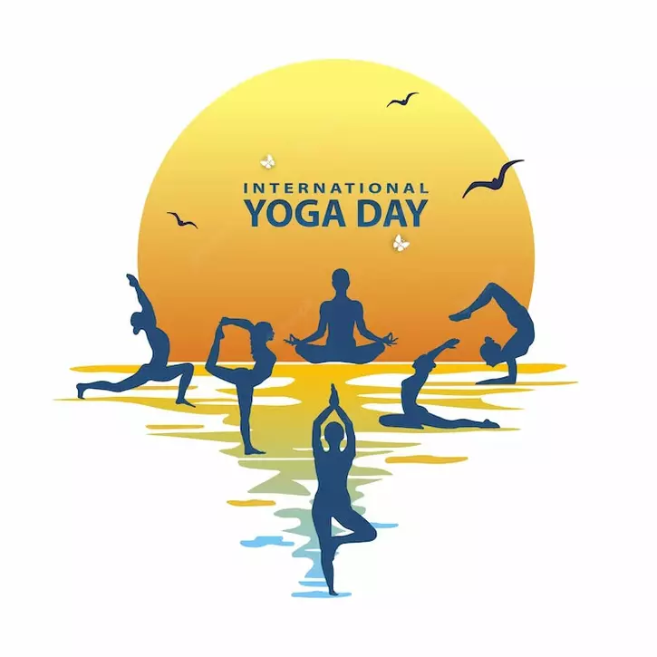

June 21, 2024
In today’s fast-paced world, the pursuit of inner peace has become more vital than ever. Yoga, with its ancient roots and modern relevance, provides a powerful gateway to emotional clarity and mental stillness. Through mindful movement and conscious breathwork, individuals can shift away from chaos and anxiety and enter a state of calm awareness. Practices like Pranayama and slow-paced Hatha yoga help reduce cortisol levels and quiet the chatter of the mind, allowing for deep introspection and serenity.
Inner peace is not about escaping life’s challenges but learning to face them with presence and resilience. Meditation, particularly mindfulness and loving-kindness techniques, teaches us to observe thoughts without judgment. It cultivates self-compassion, patience, and gratitude—qualities essential to emotional well-being. When practiced regularly, yoga becomes more than a workout; it transforms into a lifestyle that encourages stillness in action and clarity in thought, both on and off the mat.
Unlocking inner peace is a journey unique to every individual. Whether it’s found through a sunrise meditation, a quiet restorative session, or simply pausing to breathe between tasks, yoga invites us to return home to ourselves. As we align body, mind, and spirit, we learn that peace isn’t something to find externally—it’s a state we carry within. Let yoga be the mirror that reflects your inner strength and the path that guides you to lasting tranquility.